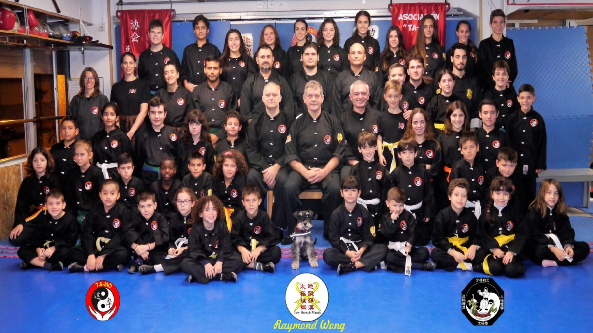

Sobre nosotros
¿Qué nos aportan las artes marciales?
Nos ofrecen un entrenamiento físico y mental completo: fortalecen el cuerpo, mejoran la salud, la coordinación y la concentración. Fomentan valores como la disciplina y el respeto, y enseñan técnicas útiles para la defensa personal en la vida real.
Deporte
Competiciones oficiales
Salud
Mejora la condición física y mental con un deporte equilibrado que combina aeróbico, anaeróbico, bilateralidad y fortalece todo el cuerpo.
Utilidad práctica
Una de las principales motivaciones para practicar artes marciales es aprender autodefensa, lo que ofrece habilidades prácticas y aumenta la confianza.
Beneficios
Sobre TA-MO
Asociación Deportiva de Artes Marciales
Asociación Deportiva de Artes Marciales
Sobre TA-MO
Fundada en 1994, esta entidad fue creada adoptando el acrónimo del fundador de las artes marciales "Ta-Mo" (Bodhidharma) con el objetivo de reunir a personas aficionadas a las Artes Marciales en un espacio común en el que poder practicar y compartir su afición en un ambiente de amistad y cordialidad. Desde su creación hemos luchado con ilusión, humildad y honestidad por llevar a cabo proyectos de calidad y perfeccionar nuestro Arte. Registrada como entidad deportiva federada, (Consell Catalá de l'Esport) garantizando así la oficialidad de las titulaciones otorgadas.
"Si te atraen las artes marciales te animamos a que practiques con nosotros"
"Si te atraen las artes marciales...
...te animamos a que practiques con nosotros"
- 
- 
- 
- 
- 
Team Instructor
Maestros Titulados
Titulaciones
- Maestros Nacionales de Kung-fu (F.C.K.)
- Instructores de Defensa Personal (Dir. Gral. Policía)
- Instructor de Kempo
- Director Deportivo de Goshin
¿Qué más beneficios puedes obtener?
Nuestro Objetivo es ayudarte a progresar personalmente tanto física como mentalmente, asi como facilitarte el acceso a todos los ámbitos que ofrece la práctica de las artes marciales.
Y nuestro medio, que nos caracteriza, es el buen ambiente de amistad y respeto, de motivación y optimismo, con la filosofia de la sencillez, honestidad y realismo.
Laboral
- Titulación oficial.
- Técnico deportivo (monitor/entrenador).
- Registro profesional (ROPEC)
- Especialista o director de coreografía en películas de acción
- Aptitud física alta que capacita para superar pruebas de acceso a diferentes instituciones
Crecimiento personal
- Autoestima, autocontrol y optimismo.
- Desarrollo de los aspectos mentales y espirituales propios de las Artes Marciales.
- Mejora la condición física y mental.Beneficios de un deporte completo ( bilateralidad, brazos-tronco-piernas).
Educativo y socio-cultural
- Competiciones oficiales.
- Amistad, respeto, esfuerzo, expresión corporal, creatividad y cultura oriental.
- Practicar artes marciales permite aprender técnicas de autodefensa para protegerse en situaciones de peligro.